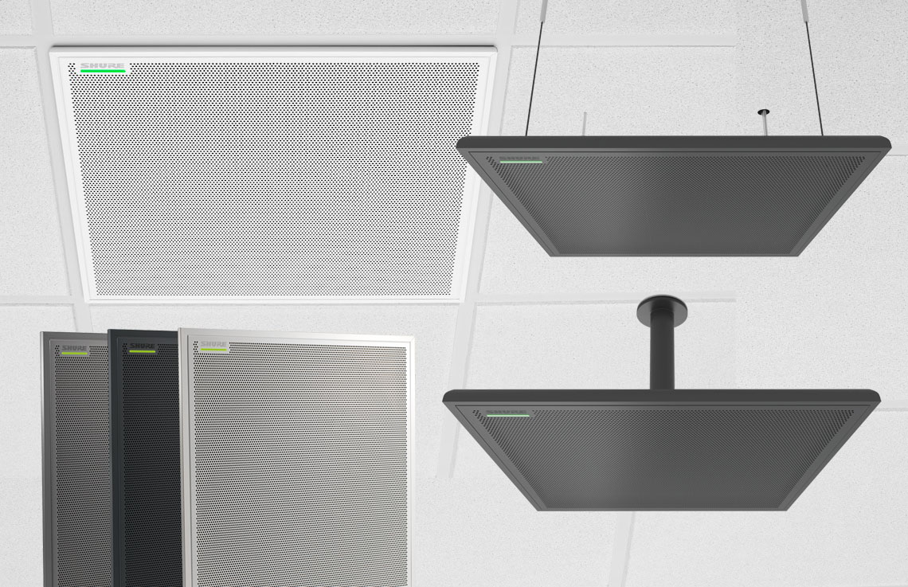

Videoconferencia
MXA910
La tecnología de cobertura™ automática no requiere configuración, pero le brinda un control preciso de la captura de audio si lo desea. Con la arquitectura de matriz de próxima generación para una captación direccional mejorada y un habla más natural, el micrófono de matriz de techo MXA920 es fácil de usar y rápido de implementar para conferencias AV, seguimiento de cámara, elevación de voz o refuerzo de sonido.
